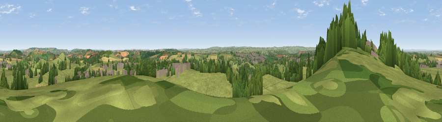

Viewpoint near Timsbury
#12160 in England · top 20% of its area beats it · near TimsburyThe view, rendered

A 360° render of this exact spot computed from the terrain model, tree cover and land cover — summer colours, afternoon light, calibrated against photographs of famous viewpoints. Real trees, hedges and buildings will differ in detail.
The panorama
Grey silhouette: terrain skyline in each direction (720 bearings, Earth curvature and refraction included). Dashed green: skyline with trees (+15 m) and buildings (+8 m) as obstacles. Blue strip: how far the ground is visible on each bearing.
Where the view opens
Wedge length = distance to the farthest visible ground on that bearing (vegetation-aware). Rings at 10, 25 and 50 km.
What fills the view
69% grassland · 17% woodland · 10% cropland · 5% built-up
Angular shares of the visible panorama (visual magnitude), not map area. Landscape diversity 0.41 (0–1 Shannon).
Key numbers
More beautiful places nearby
The staircase of upgrades: each row has a higher view potential than everything closer. Driving times are estimates from straight-line distance, calibrated against real road routing — check an actual route before setting out.
| Place | Direction | Drive | Score |
|---|---|---|---|
| The Sleight | WNW · 1 km | ~2 min | 68.8 |
| Viewpoint near Chelwood | WNW · 3 km | ~6 min | 70.6 |
| Viewpoint near Stanton Prior | N · 5 km | ~10 min | 70.7 |
| Viewpoint near Kelston | NNE · 9 km | ~18 min | 74.2 |
| Viewpoint near North Stoke | NNE · 11 km | ~20 min | 75.4 |
| Hanging Hill | NNE · 12 km | ~23 min | 76.4 |
| Beacon Batch | W · 18 km | ~31 min | 79.4 |
| Bleadon Hill [Loxton Hill] | W · 30 km | ~47 min | 79.6 |
51.33021, -2.48544 · source: screening · position refined by local search. Computed location — check access rights before visiting.